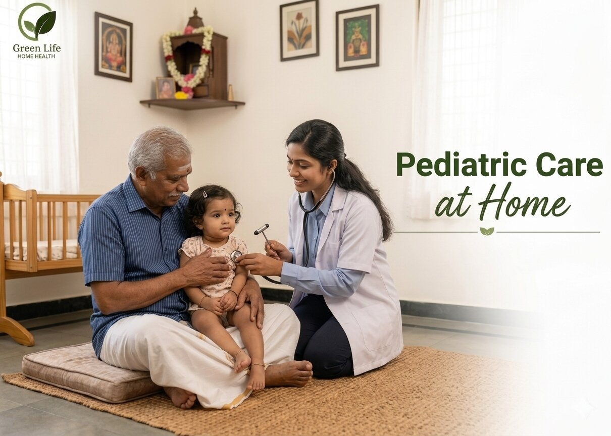

Understand
Parents share the child’s condition, age, routine, feeding needs, medicines and doctor guidance before care starts. This helps the caregiver support the child in a familiar and family-approved way.
Gentle child-focused home support for families who need attentive care routines.

Pediatric care supports children after illness, procedures or recovery periods with gentle handling and parent-friendly communication.
Children needing observation, medicine reminders, hygiene assistance, recovery support, or supervised home care routines receive gentle and attentive pediatric care tailored to their comfort and safety. This service ensures proper medication adherence, routine monitoring, and assistance with daily activities while supporting faster recovery in a familiar home environment. It also provides parents with reassurance through professional supervision and continuous care guidance.
Parents share the child’s condition, age, routine, feeding needs, medicines and doctor guidance before care starts. This helps the caregiver support the child in a familiar and family-approved way.
Care is planned around comfort, safety, hygiene and the child’s usual home routine. The goal is to avoid fear, keep the child settled and make the parents confident about the support being provided.
Caregivers assist with calm observation, hygiene support, medicine reminders and practical help as requested by the family. Child-sensitive handling is important, so the approach stays gentle and reassuring.
Parents receive clear communication about the child’s comfort, routine, appetite, mood and any changes noticed during care. This keeps the family closely involved while still reducing daily stress.
Soft, patient handling for children during daily routines.
Bathing support, diaper changes and cleanliness routines.
Gentle medicine reminders and feeding schedule support.
Engaging company and safe activity monitoring.
Daily notes on mood, meals, sleep and observed changes.
Share the child's care need and preferred timing.